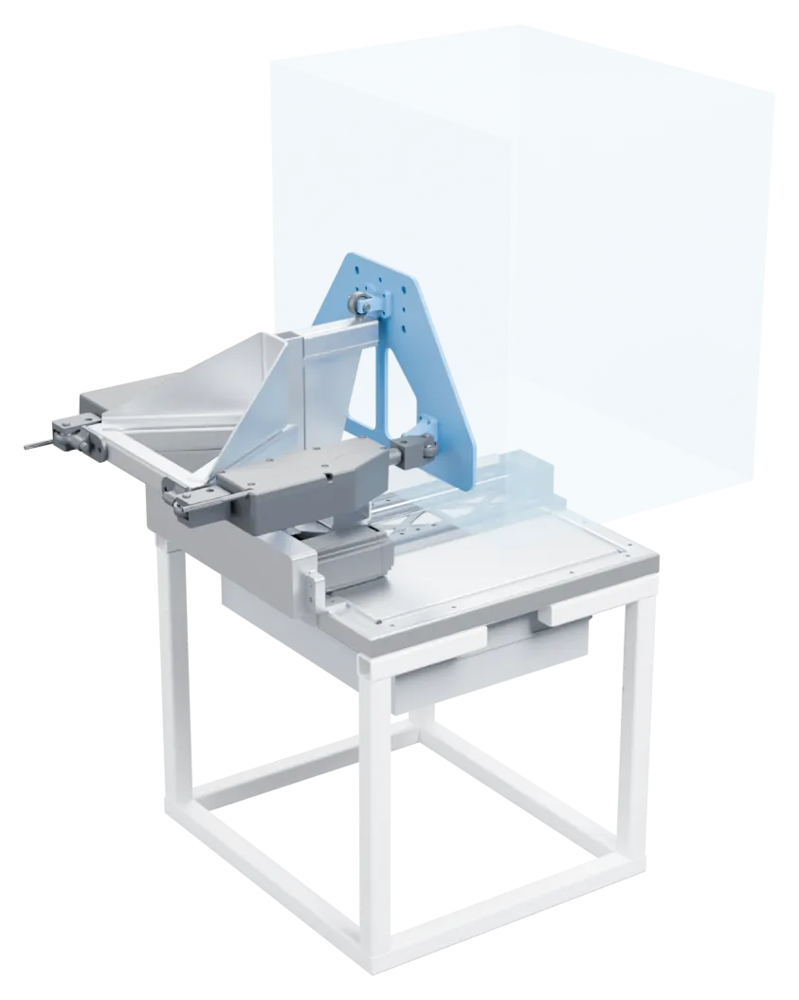

Maquette 3D
SPOC, pièce par pièce.
Faites tourner l'assemblage, écartez ses sous-ensembles, coupez-le d'un plan et parcourez sa nomenclature, comme dans un logiciel de CAO. Faites-le aussi bouger comme le prototype : le chariot avance vers la paroi, la sonde s'oriente.
L'assemblage, en douze sous-ensembles
Le porteur reste fixe, les modules s'écartent par étages.
Mouvements
Dans les limites de la conception : le chariot glisse sur ses guidages, la sonde pivote sur la rotule centrale.
Vérins : gauche 0,0 mm, droit 0,0 mm d'allongement.
Plan de coupe
Chargement de la maquette
0 %
La maquette n'a pas pu être chargée.
Vérifiez votre connexion, puis réessayez.
Affichage 3D interrompu, reprise en cours.

Votre navigateur ne permet pas l'affichage 3D interactif.
Maquette numérique simplifiée de l'assemblage de novembre 2026.
- Souris
- Glisser : tourner
- Clic droit ou Maj + glisser : déplacer
- Molette : zoomer vers le curseur
- Double-clic : cadrer la pièce
- Tactile
- Un doigt : tourner
- Deux doigts : déplacer
- Pincer : zoomer
- Toucher deux fois : cadrer la pièce
- Clavier
- Flèches : tourner
- Maj + flèches : déplacer
- + et - : zoomer
- F : ajuster, Échap : désélectionner
De la maquette à l'asservissement
Réglez une consigne, inclinez la paroi et observez comment la sonde garde sa distance.